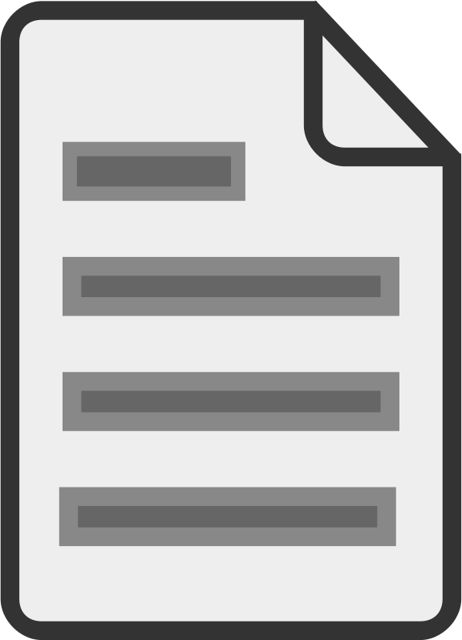

Citation and research papers
Close
This is the menu-bar.
This is the modeling area. Here you can create your models.
This is the toolbox. You can drag UML elements to the modeling area.
help/about
explain workflow
show/hide toolbox
clear diagram
cite/research
show tour
LOG
Export to XMI
Import XMI
Please use the latest Google Chrome browser only!
WebUML - an Online UML Editor © Dave Stikkolorum 2014-2016

UML Elements
{{attributeTemplate.name}}
{{operationTemplate.name}}
Connect elements by dragging their right corner to another element. You can find out more by clicking on 'keyhints'
Please enter your xml code